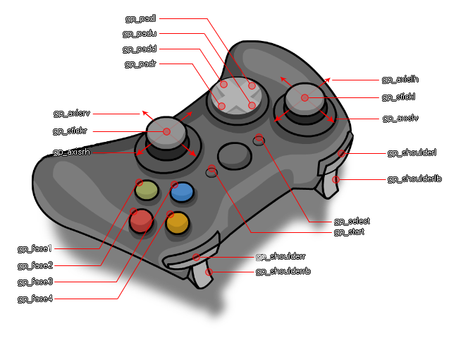

在 GameMaker 8.0 中，对手柄的支持很糟糕：
游戏手柄按钮常量
常量
描述
gp_no_key
没有按钮。实际上很少用到此常量
gp_face1
顶部按钮 1（映射到 Xbox 手柄上的“A”和 PS 手柄上的十字）
gp_face2
顶部按钮 2（映射到 Xbox 手柄上的“B”和 PS 手柄上的圆圈）
gp_face3
顶部按钮 3（映射到 Xbox 手柄上的“X”和 PS 手柄上的方块）
gp_face4
顶部按钮 4（映射到 Xbox 手柄上的“Y”和 PS 手柄上的三角）
gp_shoulderl
左肩键
gp_shoulderr
右肩键
gp_select
选择按钮（在 PS 手柄上，当您按下触摸板时触发）
gp_home
Switch 手柄上的“主页”按钮，以及某些手柄上的 PS/XBOX 徽标按钮（部分平台可能屏蔽此按钮事件）
gp_start
开始按钮（这是 PS 手柄上的“选项”按钮）
gp_stickl
按下左摇杆（作为按钮）
gp_stickr
按下右摇杆（作为按钮）
gp_padu
十字键上方向键
gp_padd
十字键下方向键
gp_padl
十字键左方向键
gp_padr
十字键右方向键
gp_touchpadbutton
PS 控制器上的触摸板按钮
gp_paddler
Xbox Elite 控制拨片 P1
gp_paddlel
Xbox Elite 控制拨片 P3
gp_paddlerb
Xbox Elite 控制拨片 P2
gp_paddlelb
Xbox Elite 控制拨片 P4
gp_extra1
额外按钮（例如：Xbox Series X 分享按钮、PS5 麦克风按钮、Nintendo Switch Pro 捕捉按钮、Amazon Luna 麦克风按钮、Google Stadia 捕捉按钮）
gp_extra2
可以映射到任何内容的额外按钮
gp_extra3
可以映射到任何内容的额外按钮
gp_extra4
可以映射到任何内容的额外按钮
gp_extra5
可以映射到任何内容的额外按钮
gp_extra6
可以映射到任何内容的额外按钮
游戏手柄摇杆常量
常量
描述
gp_axislh
左摇杆水平轴（模拟）
gp_axislv
左摇杆垂直轴（模拟）
gp_axisrh
右摇杆水平轴（模拟）
gp_axisrv
右摇杆垂直轴（模拟）
gp_shoulderlb
左扳机键
gp_shoulderrb
右扳机键
如果使用了不受支持的手柄时，以上常量均不可使用。只能使用原始按钮索引和原始索引偏移常量来进行使用。原始索引偏移常量是用于帮助输入函数区分不受支持的手柄的按钮、摇杆和十字键而设计的，通过原始索引偏移常量，此扩展最高支持不受支持的手柄的 60 个按钮，20 个摇杆，和 5 个十字键。
原始索引偏移常量
常量
描述
gp_original_button
按钮索引偏移常量
gp_original_axis
摇杆索引偏移常量
gp_original_hat
十字键索引偏移常量
还有一些与 GM8 自带的 vk_anykey 类似的常量：
任意键常量
常量
描述
gp_anybutton
手柄上的任意按钮
gp_anyaxis
手柄上的任意摇杆
gp_any
手柄上的任意键（包括按钮和摇杆）
若要更好地了解每个常量代表控制器的哪个部分，可以参考标准 XInput 游戏手柄的下图：

同样，您也可以使用 gamepad_test_mapping() 设置一个映射，使用 gamepad_remove_mapping() 删除映射，具体请参阅自定义映射函数。
gamepad_dll_init
gamepad_dll_free
gamepad_update
gamepad_is_supported
gamepad_get_device_count
gamepad_get_description
gamepad_get_type
gamepad_get_guid
gamepad_get_id
gamepad_get_axis_deadzone
gamepad_set_vibration
gamepad_set_color
gamepad_set_axis_deadzone
gamepad_axis_count
gamepad_button_count
gamepad_hat_count
gamepad_button_check
gamepad_button_check_pressed
gamepad_button_check_released
gamepad_button_check_direct
gamepad_axis_value
gamepad_button_press
gamepad_button_release
gamepad_get_mapping
gamepad_test_mapping
gamepad_remove_mapping